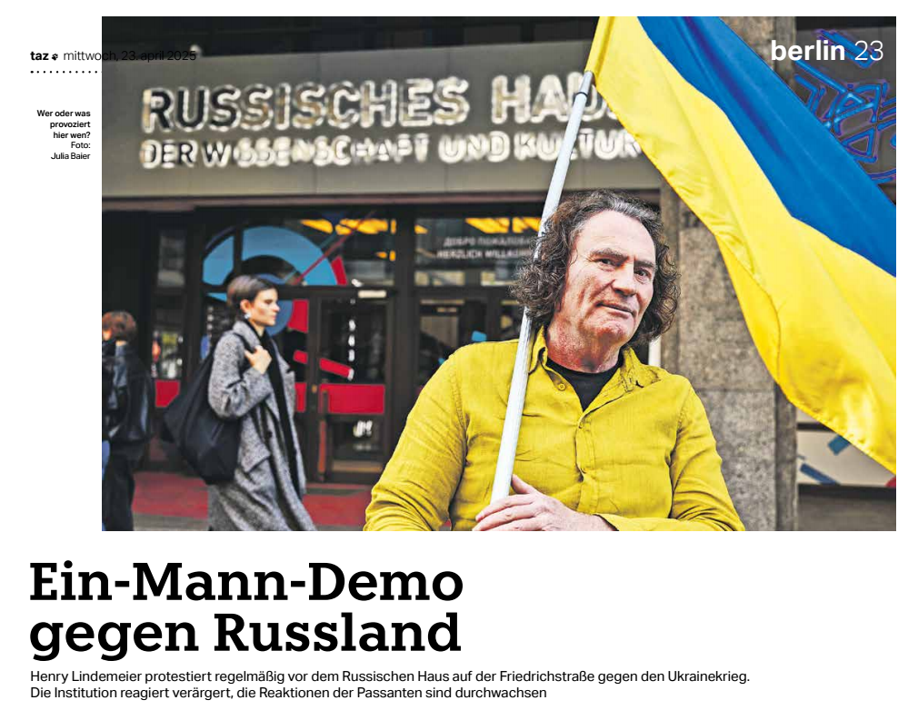
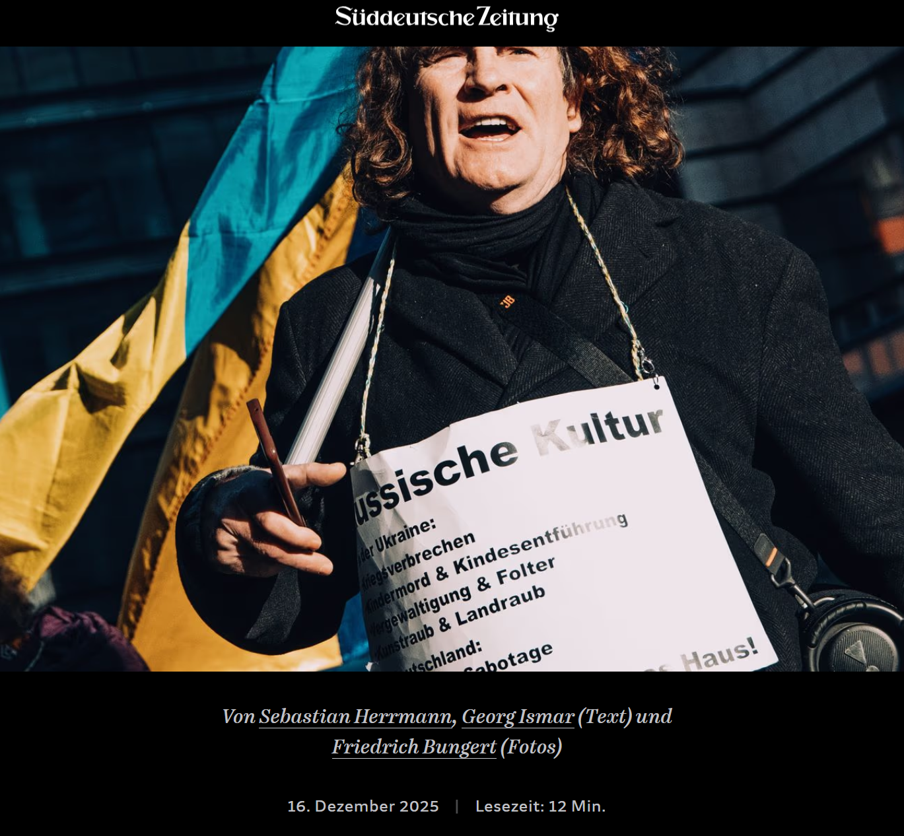
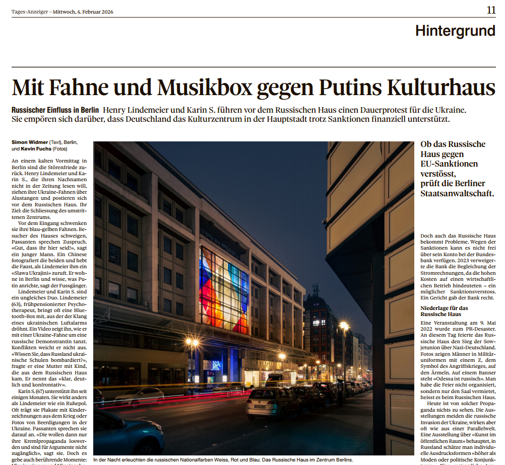

Berliner Morgenpost
Wer ist der Mann mit Ukraine-Flagge vor dem Russischen Haus?
7. August 2024 · Dirk Krampitz
Erstes Porträt – der Startpunkt der medialen Chronologie

DIE ZEIT · Zeit im Osten
Bleibt das so? – Der Protest am Russischen Haus
19. September 2024 · Sarah Vojta
Erste überregionale Einordnung – kein Berliner Lokalthema

TAZ Berlin
Ein-Mann-Demo gegen Russland
23. April 2025 · Tilman Baumgärtel
Erste Analyse der rechtlichen Widersprüche rund ums Haus

t-online
Zu viel Protest gegen Russland
26. Mai 2025 · Lars Wienand
Rechtswidrige Festnahme gerichtlich bestätigt – 33+ Polizeieinsätze

Süddeutsche Zeitung
Der Kampf eines Mannes
16. Dezember 2025 · Herrmann / Ismar / Bungert
Bisher stärkste Aufarbeitung – Gerichtsurteil, Politikerstatements, Live-Reportage

Tages-Anzeiger · Schweiz
Mit Fahne und Musikbox gegen Putins Kulturhaus
4. Februar 2026 · Simon Widmer
Erste internationale Berichterstattung – europäischer Kontext